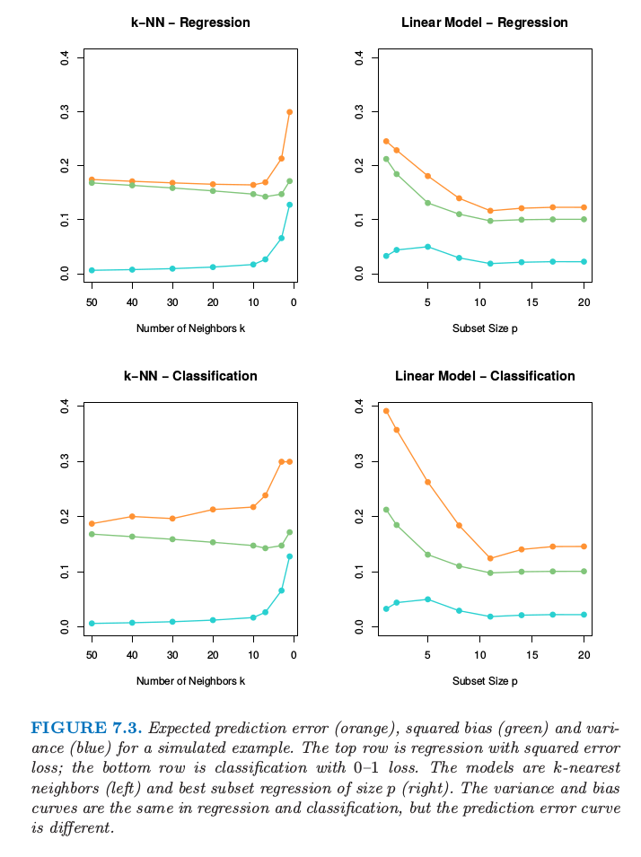

偏差-方差分解
| 原文 | The Elements of Statistical Learning |
|---|---|
| 翻译 | szcf-weiya |
| 时间 | 2017-02-18:2017-02-18 |
像第2章一样，如果我们假设$Y=f(X)+\varepsilon$，其中$E(\varepsilon)=0$，并且$Var(\epsilon)=\sigma_\varepsilon^2$，我们可以导出在使用平方误差损失的情形下，输入点$X=x_0$处回归拟合$\hat f(X)$的取值的期望预测误差。 第一项是目标在真实均值$f(x_0)$处的方差，无论我们对$f(x_0)$的估计有多好，这是不可避免的，除非$\sigma_\varepsilon^2=0$。第二项是偏差的平方，是我们估计的均值与真实的均值间的偏差量；最后一项是方差，是估计的$\hat f(x_0)$在其均值处的平方偏差的期望值。一般地，我们建立的模型$\hat f$越复杂，（平方）偏差越低但是方差越大。
对于$k$-最近邻回归拟合，这些表达式有简单的形式 这里为了简单我们假设训练输入$x_i$为固定的，则随机性来自$y_i$。邻居的个数$k$反过来与模型复杂度有关。对于较小的$k$，估计出的$\hat f_k(x)$可以对潜在的函数$f(x)$可能有更好的适应性。当$k$增大，偏差——$f(x_0)$与$k$-最近邻中的$f(x)$平均值的差的平方——一般会增大，而方差会降低。
对于线性模型拟合$\hat f_p(x)=x^T\hat\beta$，其中含有$p$个组分的参数向量$\beta$通过最小二乘拟合的，我们有 这里$h(x_0)=\mathbf{X(X^TX)^{-1}}x_0$，是得到拟合$\hat f_p(x_0)=x_0^T\mathbf{(X^TX)^{-1}X^Ty}$的$N$维线性系数，因此$\mathrm{Var}[\hat f_p(x_0)]=\Vert \mathbf h(x_0)\Vert^2\sigma_\varepsilon^2$。尽管方差随着$x_0$变化，它的平均（当$x_0$取遍样本值$x_i$）为$(p/N)\sigma^2_\varepsilon$，因此有 这称作样本内（in-sample）误差。这里模型复杂度直接与参数个数$p$有关。
weiya 注
记$X=(x_1,x_2,\ldots,x_N)’$，则
对于岭回归估计$\hat f_\alpha(x_0)$的测试误差$Err(x_0)$与（7.11）式相同，除了方差项的线性系数不一样：$\mathbf h(x_0)=\mathbf X(\mathbf {X^TX}+\alpha\mathbf I)^Tx_0$。偏差项也会不一样。
对于线性模型族比如岭回归，我们可以更精细地分解偏差。令$\beta_*$为$f$的最优线性估计的参数： 这里期望是关于输入变量$X$的分布取的。接着我们可以将平均偏差平方写成 右侧的第一项是模型偏差（model bias）平方的平均，它是最优线性近似和真实函数之间的误差。第二项是估计偏差（estimation bias）平方的平均，它是估计的平均值$E(x_0^T\hat\beta)$与最优线性近似之间的误差。
对于通过普通最小二乘拟合的线性模型，偏差估计值为0。对于约束的拟合，比如岭回归，它是正的，而且我们用减小方差的好处进行交易。模型偏差仅仅可以通过将线性模型类扩大为更广的模型类，通过在模型中加入变量的交叉项以及转换项。
图7.2 显示了偏差和方差之间的权衡的原理图。在线性模型的情形下，模型空间是从$p$个输入的所有线性预测的集合，并且标记为“closest fit”的黑点是$x^T\beta_*$。蓝色阴影部分区域表示与在训练样本中我们看到的真实值之间的误差$\sigma_\varepsilon$ 。

图7.2. 偏差和方差行为的原理图。模型空间是根据模型所有可能的预测的集合，“closest fit”用黑点标出。图中显示了偏离真实值的模型偏差，以及用圆心在标记为“closest fit in population”的黑点处的黄色的大圆来表示方差。图中也显示了收缩或者正则化的拟合，有额外的估计偏差，但是因为方差的减小导致了更小的预测误差。
图中也显示了最小二乘的方差，用圆心在标记为“closest fit in population”的黑点处的黄色大圆来表示。现在如果我们用更少的预测变量来拟合模型，或者通过将它们向0收缩来正则化系数，我们会得到图中的“shrunken fit”。这个拟合有额外的估计偏差，因为它不是模型空间的最近拟合。另一方面，它有更小的方差。如果方差的减少大于（平方）偏差的增大，则是值得的。
例子： 方差-偏差之间的权衡

图7.3. 某模拟例子的预测误差的期望（橘黄色），平方偏差（绿色）以及方差（蓝色）。上面两张图为平方误差损失的回归；下面两张图为0-1损失的分类。模型是$k$最近邻（左边）以及大小为$p$的最优子集回归（右）。在回归和分类中的方差和偏差曲线是一样的，但是预测误差曲线是不同的。
图7.3. 显示了两个模拟例子的偏差-方差之间的权衡。有80个观测，20个预测变量，在超立方体$[0,1]^{20}$中均匀分布。这些情形如下：
左图：若$X_1\le 1/2$，$Y=0$，且若$X_1>1/2$，$Y=1$，而且应用$k$-最近邻模型。
右图： 若$\sum_{j=1}^{10}X_j>5$，$Y=1$，否则$Y=0$，且采用大小为$p$的最优子集回归。
上面一行的图是平方误差损失的回归；下面一行的图是0-1损失的分类。图中显示了预测误差（红色）、平方误差（绿色）和方差（蓝色），所有都是用大的测试样本来计算的。
在回归问题中，偏差和方差相加得到预测误差曲线，对于$k$最近邻在$k=5$处有最小值，对于线性模型$p\ge 10$有最小值。对于分类损失（下图），可以看到一些有趣的现象。偏差和方差曲线与上面的图象相同，而且预测误差指的是误分类比率。我们看到预测误差不再是偏差平方与方差的和。对于$k$最近邻分类器，当邻居个数增长到20，预测误差降低或者保持不变，尽管偏差平方仍在增大。对与线性模型分类器最小值和回归一样出现在$p\ge 10$，但是在$p=1$处模型的改进是很显著的。我们看到偏差和方差是相互影响来确定预测误差。
为什么会这样？第一个现象可以很简单的解释。假设在一个给定的输入点，类别1的真实概率为0.9，而我们估计出的期望值为0.6。则偏差平方——$(0.6-0.9)^2$——是相当大的，但是预测误差为0，因为我们作出了正确的判断。换句话说，使得我们处于判别边界正确一侧的估计误差是没有影响的。练习7.2从分析角度论证这个现象，而且展示了偏差与方差之间的相互影响。
整体思想是偏差方差间的权衡在0-1损失的表现与在平方误差损失的表现不一样。反过来意味着调整参数的最优选择可能在两种设定下本质上不同。我们应该将调整参数的选择建立于对预测误差的估计之上，正如下面章节中描述的那样。